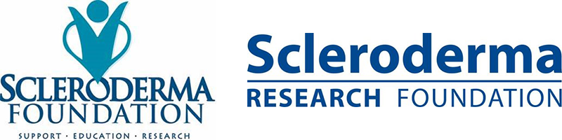

Module: Clinical Trials
Dinesh Khanna, MD, MS, Elaine A. Furst, RN, MA
Resources
Basic steps for using the clinicaltrials.gov website
Use this printout for some basic instructions on navigating the Clinicaltrials.gov website
Printout PDFWhat are the advantages and disadvantages of being involved in clinical trials?
Clinical trials are done to make sure that medications and procedures are both safe and effective. The trials are based on a set of rules called a protocol. The protocol describes what types of people may be in the trial; the schedule of procedures, tests, medications and dosages; and the length of the study. You may be eligible to participate in all or part of a research study. You will be given a complete explanation of what the study involves when you consider being a part of research trial.
Many people with scleroderma find it rewarding to participate in trials that help to improve the understanding and treatment of scleroderma. But before you start a clinical research trial, you should consider the following:
- What is the purpose of the study?
- Who is doing the study? Do I feel comfortable with them?
- What kinds of tests are involved?
- How do the possible risks, side effects, and benefits in the study compare with my current treatment?
- How might this trial affect my daily life?
- How long will the trial last?
- Who will pay for the treatment?
- What type of long-term follow-up care is part of this study?
- Who will be in charge of my care?
- Is this an open label trial (where you and your physician know what drug or treatment you are getting) or a blinded trial (where you and your physician are not aware of the treatment)?
- Is there a placebo involved in the study? A placebo is an inactive product that looks like the test product, but has no medicinal effect.
There are some advantages and disadvantages to being in a clinical trial
The advantages include:
- Patients will receive the best standard treatment.
- If the new treatment or intervention is shown to work, patients may be among the first to benefit.
- Patients have a chance to help others and improve patient care.
Some disadvantages might be:
- New treatments or interventions under study are not always better than, or even as good as, standard care.
- Even if a new treatment has benefits, it may not work for everyone.
- Health insurance and managed care providers don’t always cover clinical trials.
| Advantages | Disadvantages |
|---|---|
|
|
Clinical trials are important to moving the science of scleroderma care forward, and are why we have new medications to treat this disease. The patients who have participated in past trials are to be commended.
More information is available on http://www.nih.gov/health/clinicaltrials/index.htm. This extensive site has detailed information to help you answer the questions above.
See resource on Basic steps for using the clinicaltrials.gov website.
Where can I find a clinical trial on scleroderma?

- https://clinicaltrials.gov and enter “scleroderma” or “systemic sclerosis” in the Search for Studies box.
- In addition, both the Scleroderma Foundation and the Scleroderma Research Foundation provide alerts of ongoing trials and results of completed trials.